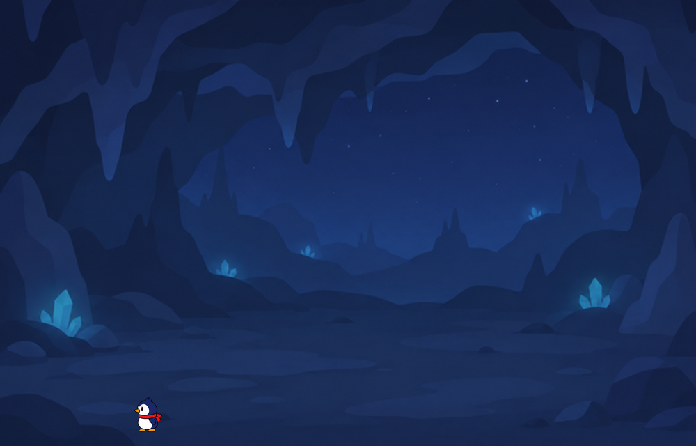
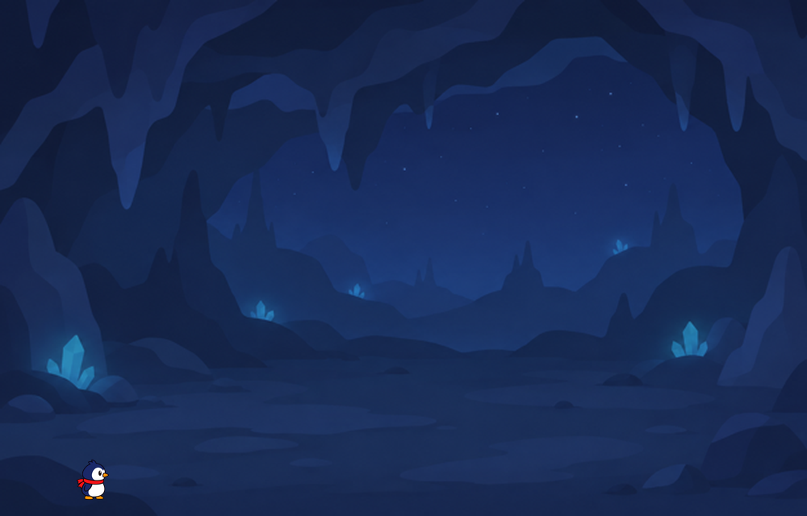
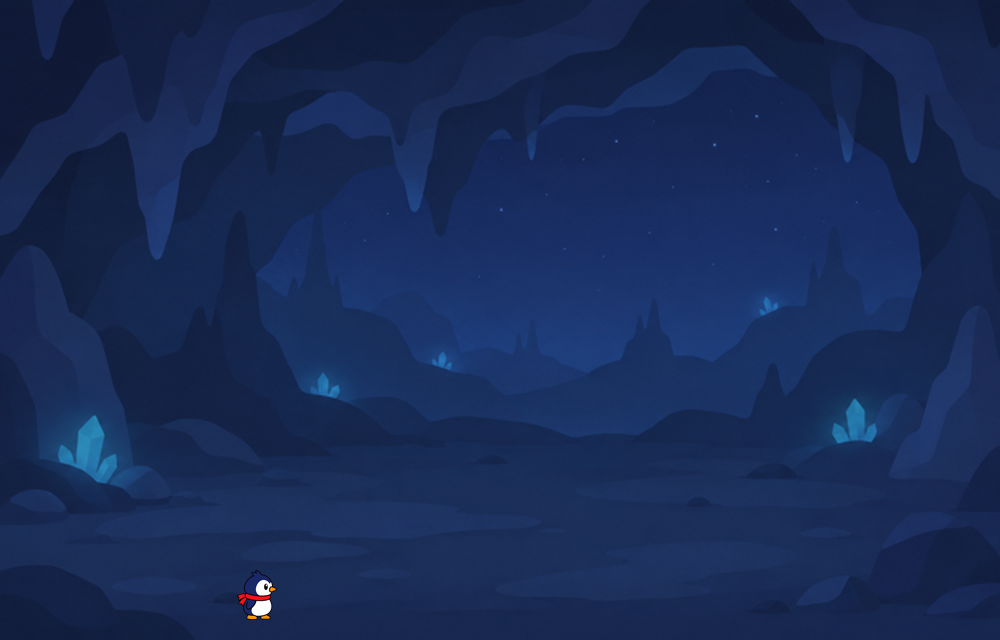

4장. 좌우 이동
3장에서는 배경 왼쪽 아래에 펭귄을 놓았습니다. 이번 장에서는 화살표 키로 펭귄을 좌우로 움직입니다. 키를 누를 때마다 위치를 바꾸는 코드를 작성한 뒤, 누르고 있는 동안 계속 움직이도록 고칩니다.
움직이는 방향에 맞춰 펭귄 그림도 바꿉니다. 장을 마치면 오른쪽으로 이동한 펭귄을 왼쪽으로 돌아보게 하고, 키를 떼어 그 모습으로 멈출 수 있습니다.

4-1 키를 누를 때마다 움직이기
키 입력으로 펭귄을 움직이려면 두 가지가 필요합니다. 게임 창은 어떤 키를 눌렀는지 알아야 합니다. 플레이어는 입력에 맞춰 위치를 바꿔야 합니다. 먼저 키를 한 번 누르면 펭귄이 10픽셀 움직이도록 만듭니다.
키 입력과 이동 메서드 연결하기
src/bubble/game/Player.java에 moveLeft()와 moveRight()를 추가합니다. 이어서 src/bubble/game/BubbleFrame.java에 키 입력을 받는 코드를 추가합니다.
setSize(50, 50); setLocation(x, y); } public void moveLeft() { x -= 10; setLocation(x, y); } public void moveRight() { x += 10; setLocation(x, y); }}package bubble.game;import java.awt.event.KeyAdapter;import java.awt.event.KeyEvent;import javax.swing.ImageIcon;import javax.swing.JFrame;import javax.swing.JLabel;⋯ player = new Player(); add(player); addKeyListener(new KeyAdapter() { @Override public void keyPressed(KeyEvent e) { switch (e.getKeyCode()) { case KeyEvent.VK_LEFT -> player.moveLeft(); case KeyEvent.VK_RIGHT -> player.moveRight(); } } }); pack(); setResizable(false); setLocationRelativeTo(null);Player의 x와 y는 플레이어의 위치를 기억합니다. 화면에서는 오른쪽으로 갈수록 x좌표가 커집니다. 따라서 moveLeft()는 x에서 10을 빼고, moveRight()는 10을 더합니다.
필드 x의 값만 바꿔서는 화면 속 펭귄이 움직이지 않습니다. setLocation(x, y)를 호출해야 JLabel의 위치도 바뀝니다. 두 메서드 모두 x좌표를 고친 다음 setLocation()을 호출하는 이유입니다. y좌표는 그대로 두므로 펭귄은 좌우로만 움직입니다.
BubbleFrame의 addKeyListener()는 창에 키 리스너(key listener)를 등록합니다. 키 리스너는 키를 누르거나 뗄 때 실행할 동작을 담습니다. 여기서는 KeyAdapter를 상속한 익명 객체를 넘깁니다.
KeyAdapter에는 키 입력을 받는 메서드가 미리 마련되어 있습니다. 필요한 메서드만 재정의하면 됩니다. 이번에는 키를 누를 때 호출되는 keyPressed()만 작성합니다.
매개변수 e는 키 입력 정보를 담은 KeyEvent 객체입니다. e.getKeyCode()로 누른 키를 알아내고, switch로 왼쪽과 오른쪽 화살표를 구분합니다. KeyEvent.VK_LEFT이면 player.moveLeft()를 호출합니다. KeyEvent.VK_RIGHT이면 player.moveRight()를 호출합니다.
이제 키 입력은 BubbleFrame이 받고, 좌표 변경은 Player가 맡습니다.
한 번 눌러 위치 확인하기
파일을 저장하고 BubbleFrame을 Run As → Java Application으로 실행합니다. 키 입력은 포커스(focus)가 있는 창에 전달됩니다. 포커스는 키보드 입력을 받을 대상으로 지정된 상태를 뜻합니다. 펭귄이 반응하지 않으면 게임 창을 클릭한 뒤 다시 누릅니다.
오른쪽 화살표를 짧게 한 번 눌렀다 뗍니다. 펭귄의 x좌표는 처음의 80에서 90으로 바뀝니다.

왼쪽 화살표를 한 번 누르면 다시 10픽셀 왼쪽으로 움직입니다. 아직 그림을 바꾸는 코드는 없으므로, 왼쪽으로 이동해도 펭귄은 오른쪽을 바라봅니다.
키를 길게 누르면 잠깐 멈칫한 뒤 여러 번 움직입니다. 운영체제가 키 누름을 반복해서 전달하기까지 대기 시간이 있기 때문입니다. 다음 절에서는 키 반복 입력에 의존하지 않고 움직이도록 바꿉니다.
4-2 게임 루프로 부드럽게 움직이기
키를 누를 때마다 이동하면 움직이는 간격이 키 입력의 반복 간격에 따라 달라집니다. 부드럽게 움직이려면 키 입력과 이동의 역할을 나눠야 합니다.
키를 누를 때는 “오른쪽 키를 누르고 있다”라는 상태만 기록합니다. 실제 이동은 일정한 간격으로 반복 실행하는 게임 루프(game loop)가 맡습니다. 이 게임에서는 Swing의 Timer 하나를 게임 루프로 사용합니다.
바로 이동하던 코드를 상태 변경으로 바꾸기
src/bubble/game/Player.java에서 moveLeft()와 moveRight()를 지웁니다. 대신 키 상태를 기억할 필드와 그 상태에 따라 이동하는 move()를 작성합니다.
src/bubble/game/BubbleFrame.java에서는 키를 누를 때 이동 메서드를 호출하던 줄을 바꿉니다. 키를 뗄 때의 동작과 Timer도 추가합니다.
import javax.swing.ImageIcon;import javax.swing.JLabel;import lombok.Setter;public class Player extends JLabel { private static final int SPEED = 4; private int x; private int y; @Setter private boolean left; @Setter private boolean right; private ImageIcon playerR; public Player() {⋯ setLocation(x, y); } public void moveLeft() { x -= 10; setLocation(x, y); } public void moveRight() { x += 10; public void move() { if (left) { x -= SPEED; } if (right) { x += SPEED; } setLocation(x, y); }}import javax.swing.ImageIcon;import javax.swing.JFrame;import javax.swing.JLabel;import javax.swing.Timer;public class BubbleFrame extends JFrame {⋯ @Override public void keyPressed(KeyEvent e) { switch (e.getKeyCode()) { case KeyEvent.VK_LEFT -> player.moveLeft(); case KeyEvent.VK_RIGHT -> player.moveRight(); case KeyEvent.VK_LEFT -> player.setLeft(true); case KeyEvent.VK_RIGHT -> player.setRight(true); } } @Override public void keyReleased(KeyEvent e) { switch (e.getKeyCode()) { case KeyEvent.VK_LEFT -> player.setLeft(false); case KeyEvent.VK_RIGHT -> player.setRight(false); } } }); new Timer(16, e -> player.move()).start(); pack(); setResizable(false); setLocationRelativeTo(null);left와 right는 각 화살표 키를 누르고 있는지 기억합니다. boolean 필드는 따로 값을 지정하지 않으면 false로 시작합니다. 게임을 처음 실행했을 때는 어느 쪽으로도 움직이지 않습니다.
키를 누르면 keyPressed()에서 해당 상태를 true로 바꿉니다. 키를 떼면 keyReleased()에서 다시 false로 바꿉니다. 예를 들어 오른쪽 화살표를 누르는 동안에는 right가 true로 유지됩니다.
앞 절의 player.moveRight() 호출은 player.setRight(true)로 바뀌었습니다. 이제 키를 누른 순간에는 좌표를 바꾸지 않습니다. 오른쪽 키를 누르고 있다는 상태만 기록합니다.
Lombok으로 키 상태 바꾸기
left와 right 위에 붙인 @Setter는 1장에서 준비한 Lombok의 어노테이션입니다. 각 필드의 값을 바꾸는 세터(setter) 메서드를 컴파일할 때 만들어 줍니다.
left에는 setLeft(boolean left), right에는 setRight(boolean right)가 생깁니다. 그래서 BubbleFrame에서 player.setRight(true)를 호출할 수 있습니다. Player.java에 세터 본문을 직접 작성할 필요가 없습니다.
이번에는 두 필드에만 @Setter를 붙였습니다. 창에서 바꿔야 하는 값은 키 상태이고, 좌표 계산은 계속 Player가 맡기 때문입니다.
Timer가 반복해서 move() 호출하기
new Timer(16, e -> player.move()).start()는 이동을 반복시키는 줄입니다. 여기서 사용하는 클래스는 javax.swing.Timer입니다.
첫 번째 인수 16은 동작을 반복할 간격이며, 단위는 밀리초입니다. 두 번째 인수의 람다는 타이머가 동작할 때 실행할 코드입니다. 마지막의 start()를 호출하면 반복이 시작됩니다.
타이머는 약 16밀리초마다 player.move()를 호출합니다. 1초에 약 60회 호출하려는 설정이지만, 실제 간격은 실행 환경과 작업량에 따라 달라질 수 있습니다. Swing의 Timer는 화면 작업을 맡는 이벤트 디스패치 스레드(event dispatch thread)에서 동작합니다. 따라서 별도의 이동 스레드를 만들지 않고 Swing 컴포넌트의 위치를 갱신할 수 있습니다.
move()는 호출될 때마다 left와 right를 확인합니다. left가 true이면 x좌표에서 SPEED를 빼고, right가 true이면 더합니다. SPEED는 한 번 이동할 거리를 정한 상수이며, 값은 4입니다.
앞 절에서는 키 이벤트가 한 번 올 때 10픽셀 움직였습니다. 이제는 타이머가 move()를 호출할 때마다 4픽셀씩 움직입니다. 작은 거리를 짧은 간격으로 이동하므로 펭귄이 이어서 걷는 것처럼 보입니다.
오른쪽 화살표를 누르면 setRight(true)가 실행됩니다. 그 뒤 타이머가 move()를 호출할 때마다 x좌표가 커집니다. 키를 떼면 setRight(false)가 실행됩니다. 이후 move() 호출에서는 오른쪽으로 움직이지 않습니다. 타이머 자체는 계속 실행됩니다.
두 방향을 검사하는 코드는 각각 독립된 if문입니다. 양쪽 키를 함께 누르면 4를 빼고 4를 더하므로 위치는 그대로입니다.
누르는 동안 움직이고 떼면 멈추는지 확인하기
기존 게임 창을 닫고, 저장한 BubbleFrame을 다시 실행합니다. 오른쪽 화살표를 약 1초 동안 누른 뒤 뗍니다.
펭귄이 처음 자리에서 오른쪽으로 멀리 이동하고, 키를 떼면 멈춥니다. 왼쪽 화살표를 누르고 있으면 반대쪽으로 계속 움직입니다.

아직 벽에서 멈추는 기능은 없습니다. 화살표를 오래 누르면 펭귄이 화면 밖으로 나갈 수 있습니다. 이번에는 짧게 눌러 움직임을 확인합니다. 벽에서 멈추는 동작은 5장에서 추가합니다.
4-3 움직이는 쪽 바라보기
펭귄이 왼쪽으로 이동해도 그림은 여전히 오른쪽을 봅니다. 이동할 때 바라보는 방향을 기억하고, 그 방향에 맞는 그림을 선택해야 합니다.
바라보는 방향은 뒤 장에서 물방울을 쏘는 방향으로도 사용합니다. 키를 뗀 뒤에도 마지막 방향을 기억하도록 Direction 필드를 추가합니다.
방향을 기억하고 그림 선택하기
src/bubble/game/Direction.java를 새로 만듭니다. 이어서 src/bubble/game/Player.java에 방향 필드와 왼쪽 그림을 추가하고, move()를 수정합니다. BubbleFrame.java는 이번 절에서 수정하지 않습니다.
package bubble.game;public enum Direction { LEFT, RIGHT} private boolean left; @Setter private boolean right; private Direction direction; private ImageIcon playerR; private ImageIcon playerL; public Player() { playerR = new ImageIcon("image/playerR.png"); playerL = new ImageIcon("image/playerL.png"); x = 80; y = 570; direction = Direction.RIGHT; setIcon(playerR); setSize(50, 50); setLocation(x, y);⋯ public void move() { if (left) { x -= SPEED; direction = Direction.LEFT; } if (right) { x += SPEED; direction = Direction.RIGHT; } if (direction == Direction.LEFT) { setIcon(playerL); } else { setIcon(playerR); } setLocation(x, y); }Direction은 LEFT와 RIGHT를 값으로 갖는 enum입니다. Player의 direction은 펭귄이 바라보는 방향을 기억합니다.
left와 right는 키를 누르고 있는지를 나타냅니다. direction은 마지막으로 어느 쪽을 바라봤는지를 나타냅니다. 키를 떼면 키 상태는 false가 되지만, 바라보는 방향은 남아 있어야 합니다.
생성자에서는 direction을 Direction.RIGHT로 지정합니다. 처음 표시하는 그림도 기존처럼 playerR이므로, 방향 값과 화면의 모습이 일치합니다.
추가한 playerL에는 미리 제공받은 image/playerL.png를 읽어 넣습니다. 오른쪽 그림은 playerR, 왼쪽 그림은 playerL에 보관합니다.
이동한 방향을 키를 뗀 뒤에도 유지하기
move()에서 왼쪽으로 이동할 때는 x좌표를 줄이고 direction을 Direction.LEFT로 바꿉니다. 오른쪽으로 이동할 때는 x좌표를 늘리고 direction을 Direction.RIGHT로 바꿉니다.
이동 계산이 끝나면 direction에 맞춰 setIcon()을 호출합니다. 방향이 LEFT이면 왼쪽 그림을, 그 밖에는 오른쪽 그림을 표시합니다. 타이머가 move()를 반복 호출하므로 위치와 그림을 같은 메서드에서 갱신합니다.
키를 모두 떼면 두 이동 조건을 건너뜁니다. 이때 direction에 다른 값을 대입하지 않으므로 마지막 방향이 유지됩니다. 왼쪽을 보며 걷다가 멈추면, 서 있는 동안에도 왼쪽 그림이 표시됩니다.
양쪽 화살표를 함께 누르면 위치는 그대로지만 오른쪽을 바라봅니다. 코드에서 오른쪽 이동 조건이 나중에 실행되어 direction에 Direction.RIGHT가 남기 때문입니다.
오른쪽으로 이동한 뒤 왼쪽을 보고 멈추기
파일을 저장하고 게임을 다시 실행합니다. 오른쪽 화살표를 눌러 펭귄을 처음 자리보다 오른쪽으로 옮깁니다. 이어서 왼쪽 화살표를 짧게 눌렀다 뗍니다.
펭귄은 왼쪽으로 조금 이동하면서 왼쪽 그림으로 바뀝니다. 키를 떼면 처음 자리보다 오른쪽에 선 채 왼쪽을 바라봅니다.
이번 장에서는 키 입력이 이동 상태를 바꾸고, 타이머가 그 상태에 따라 좌표와 그림을 갱신하도록 만들었습니다. 이후 물방울과 적군도 같은 타이머의 반복 흐름에서 움직이게 됩니다.
4장 완성 코드 보관하기
동작을 확인한 뒤 src/bubble/game의 자바 코드를 ex04 패키지에 복사합니다. 이번에 만든 Direction도 함께 복사합니다. 복사한 파일의 패키지 선언은 bubble.ex04로 맞춥니다. 다음 장은 계속 src/bubble/game의 코드를 수정하며 진행합니다.